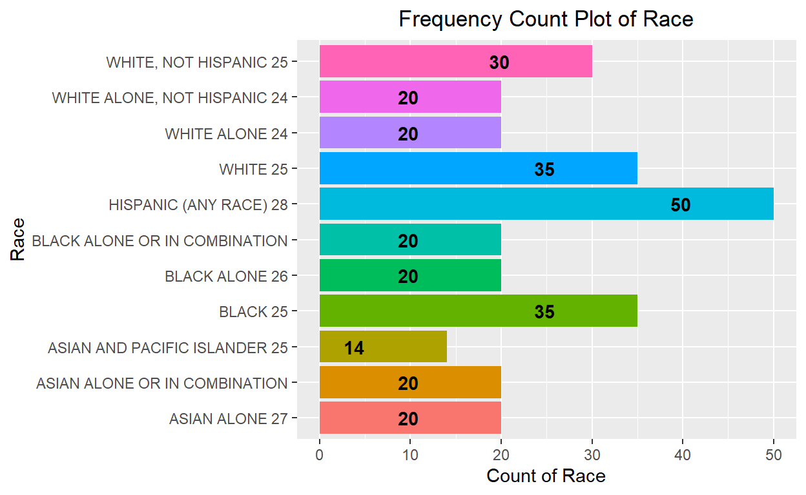
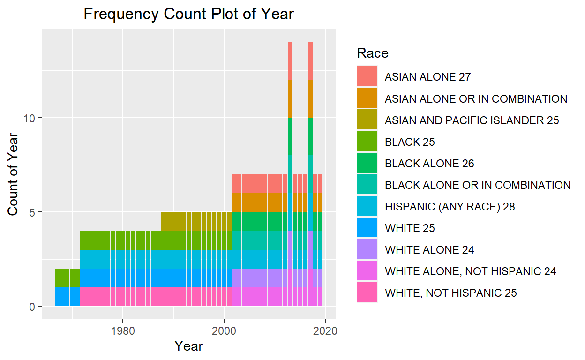
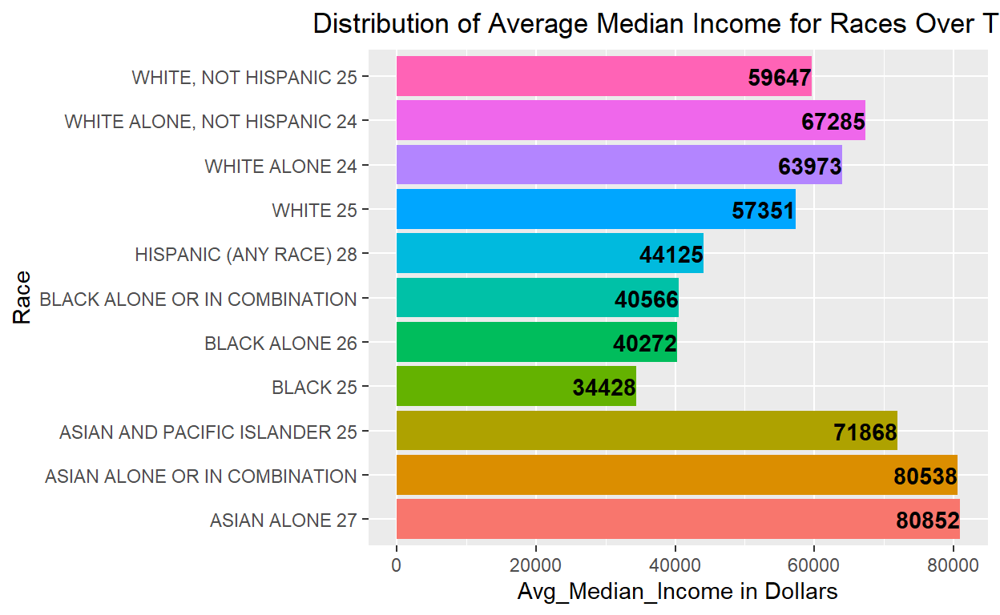
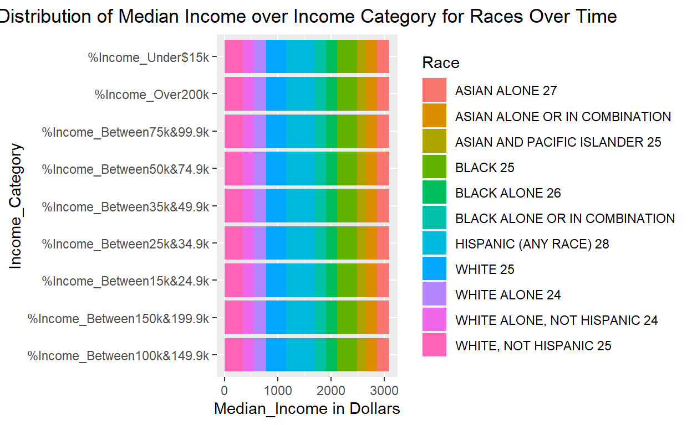
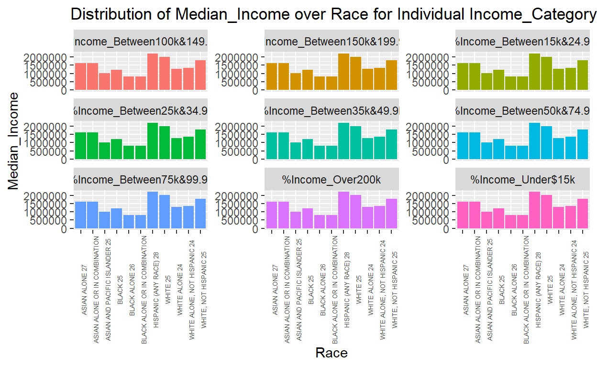
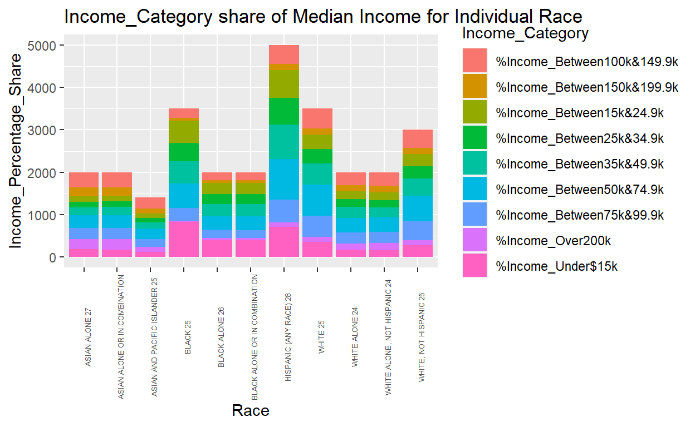
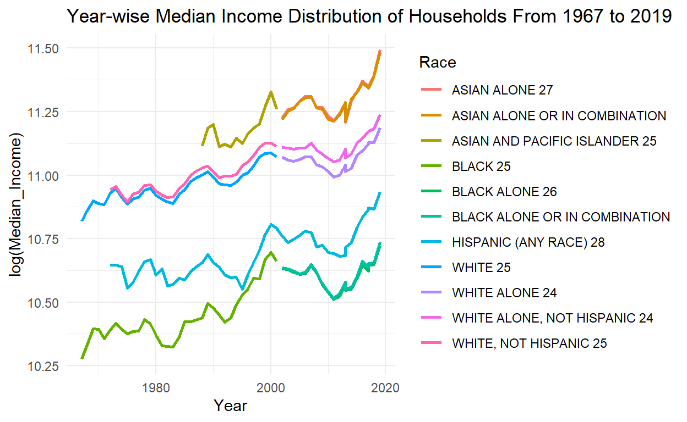
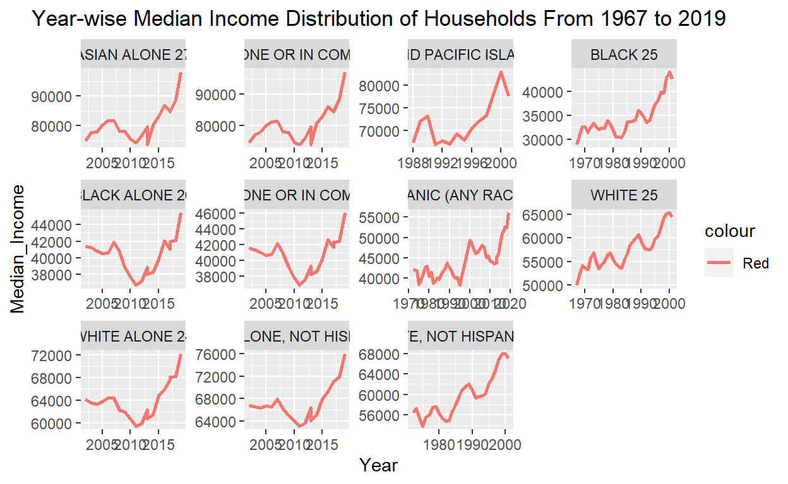
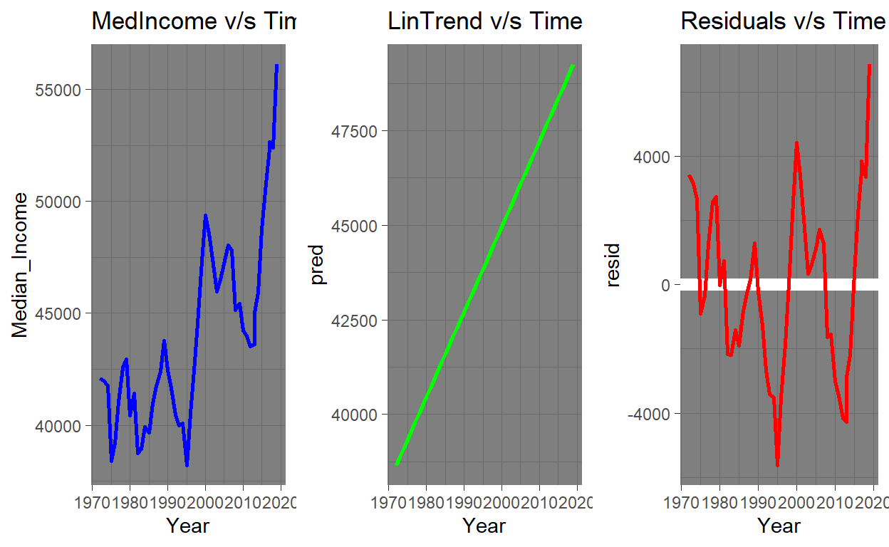
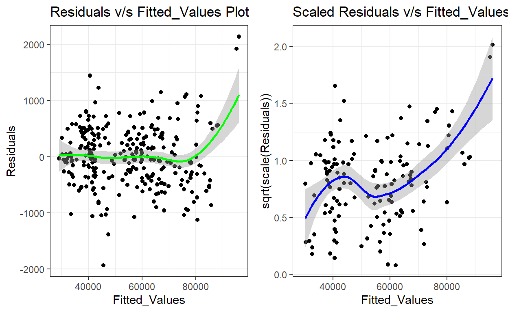

DACSS 601 - Final Project
Introduction
Census data across the globe happens to be one of the most interesting data sets that unfolds interesting stories about the socio-economic status and progress of countries. These data sets are not easy to collect and often the data sets are very disparate. Analyzing and modelling these data sets builds the causal understanding of latent information. Also, these data sets cannot be studied in silo. It needs to be articulated with the events of the past to understand why any particular variable would be impacted that results in some form of complex patterns. These data sets help in generating insights about key indicators such as income, poverty, inflation, income inequality, health, and many more as they are blended with the demographic information. Census data is collected by the respective country’s bureau.
I am interested to study from the census data how the income of the households in USA has shifted over time and the direction of the shift for households basis their Race. However, in doing so there could be subtler trends that are difficult to identify. Hence, I will try to study if at all there is a shift in the income and what could be the reasons for the shift. I will try to focus away from strong signals to understand if there is a variation in the shift of the income level. Also, if possible I will try to model the data and understand it from statistical perspective.
I have personally never analyzed any census data. Hence, I would like to explore and understand it better. I believe this will give me hands on experience to manage such data and drive insights that may impact decision making or course correction at scale. Such analysis also helps in understanding the strong and poor practices employed while data collection. It also helps is paving the way to design comfortable yet pointed questions for the survey. Such an approach makes respondents provide information with ease without any latency.
Data
For the purpose of this project, I have selected the “Households by Total Money Income, Race, and Hispanic Origin of Householder 1967 to 2019” data set published by United States Census Bureau under “Income and Poverty in the United States: 2019” publication on their webpage Bureau (2020). The data set presents details of income, earnings, income inequality, and poverty in the United States based on information collected in the 2020 and earlier Current Population Survey Annual Social and Economic Supplements (CPS ASEC) conducted by the U.S. Census Bureau. This is an appropriate choice of data set as it contains and economic activity indicator “Income” that is blended with demographic ethnicity. It helps to understand how the overall social structures are impacted over time through economic growth of the individual households
This data set has the information of various races, year the data belongs to, income Categories, percentage contribution to income through each income categories, mean of income, median of income and the margin of errors for both mean and median income. The data set comes in “.xlsx” format. It has stacked data of various Races. Below is the description of all the variables.
“Race and Hispanic origin of householder and year” - This column has the names of each Race and within each Race the Year values are mentioned within the same column. So data of all races with years is stacked in one column. “Number (thousands)” - This is the household count of data for each race year wise. “Total” - This is a percentage column calculated across various income categories percentage contribution to income. Here every single value is 100 and hence does not provide any meaningful information for our analysis. Will drop this variable from the data set. “Under $15,000” - This is the information about percentage contribution made by households earning less than $15K to income for particular race in the given year. “$15,000 to $24,999” - This is the information about percentage contribution made by households earning more than $15K and less than $24.9K to income for particular race in the given year. “$25,000 to $34,999” - This is the information about percentage contribution made by households earning more than $25K and less than $34.9K to income for particular race in the given year. “$35,000 to $49,999” - This is the information about percentage contribution made by households earning more than $35K and less than $49.9K income for particular race in the given year. “$50,000 to $74,999” - This is the information about percentage contribution made by households earning more than $50K and less than $74.9K income for particular race in the given year. “$75,000 to $99,999” - This is the information about percentage contribution made by households earning more than $75K and less than $99.9K income for particular race in the given year. “$100,000 to $149,999” - This is the information about percentage contribution made by households earning more than $100K and less than $149.9K income for particular race in the given year. “$150,000 to $199,999” - This is the information about percentage contribution made by households earning more than $150K and less than $199.9K income for particular race in the given year. “$200,000 and over” - This is the information about percentage contribution made by households earning more than equal to $2000K to income for particular race in the given year. “Percentage Distribution” - This is an overarching label for all the income slabs. This will become our grouping variable. “Median income (dollars)” - This is an overarching label to columns “Estimate” that has the value of median income and “Margin of Error” for the median income. “Median income (dollars)” - This is an overarching label to columns “Estimate” that has the value of mean income and “Margin of Error” for the mean income.
In the data set we have nominal, ordinal, and ratio scale data. I will focus on the “Estimate” of the median income to study how it has shifted over time from 1967 to 2019. My assumption here is that any naturally occuring data is prone to outliers and hence it is best to use the median statistic of the data to avoid any outlier stressed outcomes. Hence, I will also drop the mean income columns from the data set. This data set seems to be condensed version of the data collected through the years 1967 to 2019 and is prone to inaccuracies and errors. Hence, the margin of error column for median income estimate will not be important to our study and will be dropped from the data set. To orchestrate the data, the “Race and Hispanic origin of householder and year” will be de-stacked to form one combined data set and the name of all the races will be assigned to respective observations. The data will be wrangled through as per need. Before grouping any variable all necessary exploration abd visualization will be performed.
Exploratory Data Analysis and Visualization
Importing libraries to perform analysis: “tidyverse” - library for data cleansing, preparation, and wrangling “readxl” - library for importing “.xls” and “.xlsx” file “stringr” - library for string manipulation “gridExtra” - library for arranging multiple plots in single space
data <- ("C:/Users/Abhinavkumar.DESKTOP-JP9HSBL/Desktop/DACSS Summer/USA Households by Total Money Income, Race, and Hispanic Origin of Householder 1967 to 2019.xlsx")
data_income <- read_excel(data)
dim(data_income)
[1] 387 16head(data_income)
# A tibble: 6 x 16
`Table with row h~ ...2 ...3 ...4 ...5 ...6 ...7 ...8 ...9
<chr> <chr> <chr> <chr> <chr> <chr> <chr> <chr> <chr>
1 "Table A-2.\r\nHo~ <NA> <NA> <NA> <NA> <NA> <NA> <NA> <NA>
2 "(Income in 2019 ~ <NA> <NA> <NA> <NA> <NA> <NA> <NA> <NA>
3 "Race and Hispani~ Numbe~ Perce~ <NA> <NA> <NA> <NA> <NA> <NA>
4 <NA> <NA> Total Unde~ "$15~ "$25~ "$35~ "$50~ "$75~
5 "ALL RACES" <NA> <NA> <NA> <NA> <NA> <NA> <NA> <NA>
6 "2019" 128451 100 9.1 "8" "8.3~ "11.~ "16.~ "12.~
# ... with 7 more variables: ...10 <chr>, ...11 <chr>, ...12 <chr>,
# ...13 <chr>, ...14 <chr>, ...15 <chr>, ...16 <chr>The “.xlsx” file path of the dataset has been stored in the object “data.” Using “read_excel” function the dataset is imported to the object “data_income.” On inspecting the head of the dataset we can observe that it is of dimension 387 rows by 16 columns. It has got imorted with the header, which is not meaningful for our analysis. Also, the features have been assigned names during import and is not meaningful. Hence the columns need to be renamed by brute force.
data_income <- read_excel(data, skip = 3, col_names = c("Year", "Household_Count", "%_Total", "%Income_Under$15k", "%Income_Between15k&24.9k", "%Income_Between25k&34.9k",
"%Income_Between35k&49.9k", "%Income_Between50k&74.9k", "%Income_Between75k&99.9k", "%Income_Between100k&149.9k",
"%Income_Between150k&199.9k", "%Income_Over200k", "Median_Income","Median_Income_MOE", "Mean_Income",
"Mean_Income_MOE"))
head(data_income)
# A tibble: 6 x 16
Year Household_Count `%_Total` `%Income_Under$~ `%Income_Betwee~
<chr> <chr> <chr> <chr> <chr>
1 "Race ~ Number (thousan~ Percent ~ <NA> <NA>
2 <NA> <NA> Total Under $15,000 "$15,000\r\nto\~
3 "ALL R~ <NA> <NA> <NA> <NA>
4 "2019" 128451 100 9.1 "8"
5 "2018" 128579 100 10.1 "8.800000000000~
6 "2017 ~ 127669 100 10 "9.1"
# ... with 11 more variables: %Income_Between25k&34.9k <chr>,
# %Income_Between35k&49.9k <chr>, %Income_Between50k&74.9k <chr>,
# %Income_Between75k&99.9k <chr>, %Income_Between100k&149.9k <chr>,
# %Income_Between150k&199.9k <chr>, %Income_Over200k <chr>,
# Median_Income <chr>, Median_Income_MOE <chr>, Mean_Income <chr>,
# Mean_Income_MOE <chr>*Using “read_excel” we have gain imported the dataset. We have skipped first 3 header rows and renamed all the columns as “Year,” “Household_Count,” "%_Total“,”%Income_Under$15k“,”%Income_Between15k&24.9k“,”%Income_Between25k&34.9k“,”%Income_Between35k&49.9k“,”%Income_Between50k&74.9k“,”%Income_Between75k&99.9k“,”%Income_Between100k&149.9k“,”%Income_Between150k&199.9k“,”%Income_Over200k“,”Median_Income“,”Median_Income_MOE“,”Mean_Income“,”Mean_Income_MOE" respectively. We can observe from the tibble that the first column “Year” has dual information about Race names and respective years. We will remove all the race names from the “Year” column and assign it to a new column “Race” with respect to “Year” column observations accordingly. We can also observe that “NA” values are also present. Hence, we meed to check across all columns for “NA” values presence. The original column names have been imported in the data as part of observations that needs to removed. Also, the dimension of the data is now 385 observation by 16 columns*
tail(data_income)
# A tibble: 6 x 16
Year Household_Count `%_Total` `%Income_Under$~ `%Income_Betwee~
<chr> <chr> <chr> <chr> <chr>
1 25 For ~ <NA> <NA> <NA> <NA>
2 26 Blac~ <NA> <NA> <NA> <NA>
3 27 Asia~ <NA> <NA> <NA> <NA>
4 28 Beca~ <NA> <NA> <NA> <NA>
5 Note: I~ <NA> <NA> <NA> <NA>
6 Source:~ <NA> <NA> <NA> <NA>
# ... with 11 more variables: %Income_Between25k&34.9k <chr>,
# %Income_Between35k&49.9k <chr>, %Income_Between50k&74.9k <chr>,
# %Income_Between75k&99.9k <chr>, %Income_Between100k&149.9k <chr>,
# %Income_Between150k&199.9k <chr>, %Income_Over200k <chr>,
# Median_Income <chr>, Median_Income_MOE <chr>, Mean_Income <chr>,
# Mean_Income_MOE <chr>We can observe that the tail end of data set has footer explaining the meaning of encoded values in the data. There are 31 such rows from the tail that we need to drop from the data set.
Year Household_Count
TRUE TRUE
%_Total %Income_Under$15k
TRUE TRUE
%Income_Between15k&24.9k %Income_Between25k&34.9k
TRUE TRUE
%Income_Between35k&49.9k %Income_Between50k&74.9k
TRUE TRUE
%Income_Between75k&99.9k %Income_Between100k&149.9k
TRUE TRUE
%Income_Between150k&199.9k %Income_Over200k
TRUE TRUE
Median_Income Median_Income_MOE
TRUE TRUE
Mean_Income Mean_Income_MOE
TRUE TRUE We can observe that all the columns in the dataset has “NA” values present. We have used the “apply” function here to detect the “NA” values across the variables.
str(data_income)
tibble [385 x 16] (S3: tbl_df/tbl/data.frame)
$ Year : chr [1:385] "Race and Hispanic origin of householder\r\nand year" NA "ALL RACES" "2019" ...
$ Household_Count : chr [1:385] "Number (thousands)" NA NA "128451" ...
$ %_Total : chr [1:385] "Percent distribution" "Total" NA "100" ...
$ %Income_Under$15k : chr [1:385] NA "Under $15,000" NA "9.1" ...
$ %Income_Between15k&24.9k : chr [1:385] NA "$15,000\r\nto\r\n$24,999" NA "8" ...
$ %Income_Between25k&34.9k : chr [1:385] NA "$25,000\r\nto\r\n$34,999" NA "8.3000000000000007" ...
$ %Income_Between35k&49.9k : chr [1:385] NA "$35,000\r\nto\r\n$49,999" NA "11.7" ...
$ %Income_Between50k&74.9k : chr [1:385] NA "$50,000\r\nto\r\n$74,999" NA "16.5" ...
$ %Income_Between75k&99.9k : chr [1:385] NA "$75,000\r\nto\r\n$99,999" NA "12.3" ...
$ %Income_Between100k&149.9k: chr [1:385] NA "$100,000\r\nto\r\n$149,999" NA "15.5" ...
$ %Income_Between150k&199.9k: chr [1:385] NA "$150,000\r\nto\r\n$199,999" NA "8.3000000000000007" ...
$ %Income_Over200k : chr [1:385] NA "$200,000 and over" NA "10.3" ...
$ Median_Income : chr [1:385] "Median income\r\n(dollars)" "Estimate" NA "68703" ...
$ Median_Income_MOE : chr [1:385] NA "Margin of error1 (±)" NA "904" ...
$ Mean_Income : chr [1:385] "Mean income\r\n(dollars)" "Estimate" NA "98088" ...
$ Mean_Income_MOE : chr [1:385] NA "Margin of error1 (±)" NA "1042" ...On inspecting the structure of the dataset, we understand that all the features are being recognized as “charatcter in R environment. This is incorrect. Hence, we will need to coerce the columns to the right class. The columns representing percentage under income slab variables such as” %Income_Between25k&34.9k" has values that have multiple deimal points and need to be restricted to single deimal point.
data_income <- data_income %>% slice(3 : 354) %>%
mutate(Race = sapply(Year, function(x){
if(str_detect(x,"[A-Za-z]") == TRUE){
return (x)
}
else{
return (NA)
}})) %>%
relocate(Race)
for(i in seq_along(data_income$Race)){
data_income$Race[i]<-ifelse(is.na(data_income$Race[i]),data_income$Race[i-1], data_income$Race[i])
}
head(data_income)
# A tibble: 6 x 17
Race Year Household_Count `%_Total` `%Income_Under$15k`
<chr> <chr> <chr> <chr> <chr>
1 ALL RACES ALL RACES <NA> <NA> <NA>
2 ALL RACES 2019 128451 100 9.1
3 ALL RACES 2018 128579 100 10.1
4 ALL RACES 2017 2 127669 100 10
5 ALL RACES 2017 127586 100 10.1
6 ALL RACES 2016 126224 100 10.4
# ... with 12 more variables: %Income_Between15k&24.9k <chr>,
# %Income_Between25k&34.9k <chr>, %Income_Between35k&49.9k <chr>,
# %Income_Between50k&74.9k <chr>, %Income_Between75k&99.9k <chr>,
# %Income_Between100k&149.9k <chr>,
# %Income_Between150k&199.9k <chr>, %Income_Over200k <chr>,
# Median_Income <chr>, Median_Income_MOE <chr>, Mean_Income <chr>,
# Mean_Income_MOE <chr>From the tibble “data_income” with dimension (385 by 16), we are extracting the rows 3 to 354. This helps in ignoring the tail part of the data which has footer. Then using “mutate” function have created a new column “Race.” Using “sapply” function over “Year” column have created a user defined local function to extratct all race names and have implemented a loop function to populate all the race names in the respective rows of the “Race” column. While creating the column for “Race,” it got added as the last column in the tibble and have repositioned it to the first column in the tibble using relocate function. The first few rows in the manipulated tibble belongs to “ALL RACES” that is just an aggregate of all categories of “Race.” We will remove these observations from the tibble. Also, we can see that under “Year” column the years have more than 4 digits and that needs to be truncated.
data_income <- data_income %>% select("Race" : "Household_Count", "%Income_Under$15k" : "Median_Income") %>%
mutate(Year = str_extract(Year, "\\d+")) %>% # "\\d+" helps in extracting the only first 4 digits of the year and leaves out anything that is after a blank space.
filter(!str_detect(Year, "[A-Za-z]", negate = FALSE)) %>%
na.omit() %>%
filter(str_detect(Race, "ALL RACES", negate = TRUE)) %>%
filter(str_detect(Household_Count, "N", negate = TRUE))
head(data_income)
# A tibble: 6 x 13
Race Year Household_Count `%Income_Under$~ `%Income_Betwee~
<chr> <chr> <chr> <chr> <chr>
1 WHITE ALONE 24 2019 100568 7.8 7.5
2 WHITE ALONE 24 2018 100528 8.5 8.3000000000000~
3 WHITE ALONE 24 2017 100113 8.5 8.6
4 WHITE ALONE 24 2017 100065 8.6 8.6999999999999~
5 WHITE ALONE 24 2016 99400 8.9 8.6
6 WHITE ALONE 24 2015 99313 8.9 9.5
# ... with 8 more variables: %Income_Between25k&34.9k <chr>,
# %Income_Between35k&49.9k <chr>, %Income_Between50k&74.9k <chr>,
# %Income_Between75k&99.9k <chr>, %Income_Between100k&149.9k <chr>,
# %Income_Between150k&199.9k <chr>, %Income_Over200k <chr>,
# Median_Income <chr>To further crystallize the data set for analysis, have used “select” function to keep “Race,” “Year,” “Household_Count,” “%Income_Under$15k,” “%Income_Between15k&24.9k,” “%Income_Between25k&34.9k,” “%Income_Between35k&49.9k,” “%Income_Between50k&74.9k,” “%Income_Between75k&99.9k,” “%Income_Between100k&149.9k,” “%Income_Between150k&199.9k,” “%Income_Over200k,” and “Median_Income” features in the data set. Using “str_extract” function from “stringr” package, have extracted the first 4 digits of the years in every observation with regular expression “\d+.” With “filter” function have used “str_detect” to identify “ALL RACES” class under “Race” feature to remove it from the tibble. The feature “Household_Count” has missing values with pattern “N” and these observation will not be useful. Hence, dropping these rows as well. Now the tibble is of the dimension (284 by 13).
data_income_num <- data_income %>%
select("Year", "Household_Count", "%Income_Under$15k" : "Median_Income") %>%
mutate_if(is.character,as.numeric) %>%
mutate_at(4:12, round, 1)
data_income <- tibble(data_income["Race"], data_income_num)
head(data_income)
# A tibble: 6 x 13
Race Year Household_Count `%Income_Under$~ `%Income_Betwee~
<chr> <dbl> <dbl> <dbl> <dbl>
1 WHITE ALONE 24 2019 100568 7.8 7.5
2 WHITE ALONE 24 2018 100528 8.5 8.3
3 WHITE ALONE 24 2017 100113 8.5 8.6
4 WHITE ALONE 24 2017 100065 8.6 8.7
5 WHITE ALONE 24 2016 99400 8.9 8.6
6 WHITE ALONE 24 2015 99313 8.9 9.5
# ... with 8 more variables: %Income_Between25k&34.9k <dbl>,
# %Income_Between35k&49.9k <dbl>, %Income_Between50k&74.9k <dbl>,
# %Income_Between75k&99.9k <dbl>, %Income_Between100k&149.9k <dbl>,
# %Income_Between150k&199.9k <dbl>, %Income_Over200k <dbl>,
# Median_Income <dbl>Now a new tibble “data_income_num” has been created to coerce the features except for “Race” to numeric class. From the head of the new tibble it can be observed that class of the features have coerced to numeric (double) uisng “mutate_if” function . Npw we will merge the coerced new tibble with the “Race” feature to for new tibble with the same object name as “data_income.” Also, have rounded the percentage income contribution columns using “round” function to one decimal point. Now the tibble is ready to be analyzed and visualized
data_income %>% ggplot(aes(y = Race, fill = Race)) + geom_bar() +
theme(legend.position = "none") + labs(title = "Frequency Count Plot of Race", x = "Count of Race") +
theme(plot.title = element_text(hjust = 0.5)) +
geom_text(stat='count', aes(label=..count..), vjust = 0.5, hjust= 5, fontface = "bold")

Using ggplot function a bar plot of “Race” feature is created. We can observe the data in terms of frequency is not consistent across races that has been collected from years 1967 to 2019. The race category “Hispanic (Any Race) 28” has the maximum data availability of 50 years and “Asia And Pacific Islander 25” has minimum data availability of 14 years. Across race categories the data availability is not consistent and modelling data for each variabale class will not result in dependable insights. Hence, for modelling the data, all the “Race” categories will be used to drive insights about shift in median income of households. It can be observed from classes of the “Race” that each class name has some numeric value attached at the end and the names of the classes is not straight forward to understand. Here is the description of “Race” classes:
“ASIAN ALONE 27” - Asian alone refers to people who reported Asian and did not report any other race category.
“ASIAN AND PACIFIC ISLANDER 25” - For the year 2001 and earlier, the CPS ASEC allowed respondents to report only one race group.
“BLACK 25” - For the year 2001 and earlier, the CPS ASEC allowed respondents to report only one race group.
“BLACK ALONE 26” - Black alone refers to people who reported Black and did not report any other race category.
“HISPANIC ANY RACE 28” - Because Hispanics may be any race, data in this report for Hispanics overlap with data for racial groups. Hispanic origin was reported by 15.6 percent of White householders who reported only one race, 5.0 percent of Black householders who reported only one race, and 2.5 percent of Asian householders who reported only one race. Data users should exercise caution when interpreting aggregate results for the Hispanic population and for race groups because these populations consist of many distinct groups that differ in socioeconomic characteristics, culture, and recency of immigration. Data were first collected for Hispanics in 1972.
“WHITE 25” - For the year 2001 and earlier, the CPS ASEC allowed respondents to report only one race group.
“WHITE ALONE 24” - Beginning with the 2003 CPS ASEC, respondents were allowed to choose one or more races. White alone refers to people who reported White and did not report any other race category. The use of this single-race population does not imply that it is the preferred method of presenting or analyzing the data. The Census Bureau uses a variety of approaches.
“WHITE ALONE, NOT HISPANIC 24” - Beginning with the 2003 CPS ASEC, respondents were allowed to choose one or more races. White alone refers to people who reported White and did not report any other race category. The use of this single-race population does not imply that it is the preferred method of presenting or analyzing the data. The Census Bureau uses a variety of approaches. It seems in this category households mention they are White but not of Hispanic origin
“WHITE ALONE, NOT HISPANIC 25” - For the year 2001 and earlier, the CPS ASEC allowed respondents to report only one race group. The above explanation of encoded values have been verbatim taken from the data published by the bureau and in no way represent my interpretation of the races. However, the below interpretation of the 2 classes of race is my own “Asian ALONE OR IN COMBINATION” - Meaning of the “Race” class not available. However, it seems that the households reported themselves as Asians or a household of mixed races due to marriage, birth, or naturalization.
“BLACK ALONE OR IN COMBINATION” - Meaning of the “Race” class not available. However, it seems that the households reported themselves as Asians or a household of mixed races due to marriage, birth, or naturalization.
data_income %>% ggplot(aes(x = Year, fill = Race)) + geom_bar() +
theme(legend.position = "right") + labs(title = "Frequency Count Plot of Year", y = "Count of Year") +
theme(plot.title = element_text(hjust = 0.5))

From the above bar plot of “Year” frequency, the intuition that data for all “Race” classes is not consistent and hence modelling for median income basis classes of “Race” will not give robust results.
data_income_grouped <- data_income %>%
pivot_longer("%Income_Under$15k" : "%Income_Over200k", names_to = "Income_Category", values_to = "Income_Percentage_Share")
Using “pivot_longer” function have grouped the percentage contribution income slabs data to “Income_Category” and its respective values to “Income_Percentage_Share.” This grouped data tibble is named as “data_income_grouped.” Now the tibble dimension is (2556 observations by 6 columns)
plotdata <- data_income %>%
group_by(Race) %>%
summarize(Avg_Median_Income = mean(Median_Income))
plotdata$Avg_Median_Income <- round((plotdata$Avg_Median_Income), 0)
head(plotdata)
# A tibble: 6 x 2
Race Avg_Median_Income
<chr> <dbl>
1 ASIAN ALONE 27 80852
2 ASIAN ALONE OR IN COMBINATION 80538
3 ASIAN AND PACIFIC ISLANDER 25 71868
4 BLACK 25 34428
5 BLACK ALONE 26 40272
6 BLACK ALONE OR IN COMBINATION 40566Prepared a table for Race and mean of Median_Income for all races to understand the distribution of income across races over time.
plotdata %>% ggplot(aes(y = Race, x = Avg_Median_Income, fill = Race)) +
geom_bar(stat = "identity") + theme(legend.position = "none") +
labs(title = "Distribution of Average Median Income for Races Over Time", x = "Avg_Median_Income in Dollars") +
theme(plot.title = element_text(hjust = 0.50)) +
geom_text(aes(label = Avg_Median_Income), hjust = 1, fontface = "bold")

Here it can be observed that highest average meidan income is being earned by households of Asian origin followed by households of White origin. However, this insight might not hold true as the data collection process over time has changed. Also, the data availability for races of Asian origin only ranges from 14 years to 20 years and was collected much later by when the over all median income across race categories had increased.
data_income_grouped %>%
ggplot(aes(x = log(Median_Income), y = Income_Category, fill = Race)) +
geom_bar(stat = "identity") + theme(legend.position = "right") +
labs(title = "Distribution of Median Income over Income Category for Races Over Time", x = "Median_Income in Dollars") +
theme(plot.title = element_text(hjust = 0.50))

This is bar plot of Income_Categories versus Median_Income where the legend is Race. This has been visualized to understand individual Income_Category contribution towards Median Income for all the Races at each Income Category level. However, this visualization is very complex to drive insights. It seems that across Income Categories contribution to Median Income is distributed proportionally across Races. In order to generate better insight, we need to visualize for individual Race categories.
data_income_grouped %>%
ggplot(aes(y = Median_Income, x = Race, fill = Income_Category)) +
geom_bar(stat = "identity") + theme(legend.position = "none") +
theme(axis.text.x = element_text(size = 5, angle = 90), ) +
labs(title = "Distribution of Median_Income over Race for Individual Income_Category", x = "Race") +
facet_wrap(vars(Income_Category), scales = "free_y", shrink = TRUE) +
theme(plot.title = element_text(hjust = 0.30))

Through this plot the effort is to understand individual Income_Category contribution tot Median_Income across all the Races. Howvere, even this visualization is too complex to drive meaningful insights as it is difficult to interpret. We will try to do this differently now.
data_income_grouped %>%
ggplot(aes(x = Race, y = Income_Percentage_Share, fill = Income_Category)) +
geom_bar(stat = "identity") + theme(legend.position = "right") +
labs(title = "Income_Category share of Median Income for Individual Race", x = "Race") +
theme(axis.text.x = element_text(size = 5, angle = 90))

From this bar plot, we are able to see how much does each Income_Category contributes to total Median_Income across Races. However, from the plot it is difficult to understand which Income_Category is contributing the most under individual Race category. For that we can build cross tables to understand.
data_income %>%
ggplot(aes(Year, log(Median_Income), group = Race, color = Race)) +
geom_line(size = 1) + theme_minimal() + labs(title = "Year-wise Median Income Distribution of Households From 1967 to 2019")

As our data set is too small, and the data is quite disparate from the perspective that it has been collected at different times for different Races. Also, there has been change in survey questionnaire so over time the data has been collected differently. Also, for a few races data collection started happening much later. Like for “ASIAN AND PACIFIC ISLANDER 25” we have data from 1998 to 2001 only. For “ASIA ALONE 27” and “ASIAN ALONE OR IN COMBINATION” the data collection has been done only between 2002 to 2019.
We can observe from the line plot that the over all Median_Income has shifted positively upwards but it is difficult to see the subtler trends. Also, my intuition is that the races could have been much lesser but due to the way households have identified themselves, it gave rise to more categories. It has been mentioned in data that Hispanics category has other overlapping classes. Hence, it gives us strong signal that data quality can be improved. However, to understand how household median income has improved, data cannot be modeled based on race categories as there are not enough examples within each race to model for median income. So, I will take the complete data set of 248 observations and 13 features to model for median income.
data_income %>%
ggplot(aes(y = Median_Income, x = Year, color = "Red")) + geom_line( stat = 'identity', size = 1) +
labs(title = "Year-wise Median Income Distribution of Households From 1967 to 2019") +
facet_wrap(vars(Race), scales = "free") + theme(plot.title = element_text(hjust = 0.5))

Here we have re-plotted the same information of median income over time as earlier but this time have used “facet_wrap” over “Race” variable to understand the trends better. Here we can observe that the median income has grown for each racial category in the data set. Interestingly, majority of the racial classes for which data is available between mid 2005 to 2015, they have experienced decline in median income. This was the global economic meltdown period due to Sub Prime crisis. From here we can pick up an individual category and see if we are missing out on further trends. I will take “HISPANIC (ANY RACE) 28” category to showcase the same.
library(modelr)
Hispanic <- filter(data_income, Race == "HISPANIC (ANY RACE) 28")
Complete_Data <- Hispanic %>%
ggplot(aes(Year, Median_Income)) +
geom_line(color = "Blue", size = 1) +
labs(title = "MedIncome v/s Time") +
theme(plot.title = element_text(hjust = 0.5)) + theme_dark()
Hispanic_pred <- lm(Median_Income ~ Year, data = Hispanic)
Model <- Hispanic %>%
add_predictions(Hispanic_pred) %>%
ggplot(aes(Year, pred)) +
geom_line(color = "Green", size = 1) +
labs(title = "LinTrend v/s Time") +
theme(plot.title = element_text(hjust = 0.5)) + theme_dark()
Residuals <- Hispanic %>%
add_residuals(Hispanic_pred) %>%
ggplot(aes(Year, resid)) +
geom_hline(yintercept = 0, colour = "white", size = 3) +
geom_line(color = "Red", size = 1) +
labs(title = "Residuals v/s Time") +
theme(plot.title = element_text(hjust = 0.5)) + theme_dark()
grid.arrange(Complete_Data, Model, Residuals, nrow = 1)

Here I have tried to fit a linear model to the data. It can be observed that the Median_Income data is not following a linear trend. It seems to follow some kind of polynomial trend, maybe quadratic. We can see from the Linear Trend versus Time plot that the a linear model has been tried to fit and values for median income have been predicted. However, basis the residuals plot we can observe that the prediction made by the model are not very dependable due to high variation in the residual distribution which does not satisfy the assumption of linear regression. So,now I will use the complete data to fit the model and analyze how is median income being impacted. I will use all the variables to model the median income from data_income data set.
data_reg <- data_income[,]
data_reg$Year <- as.factor(data_reg$Year)
model <- lm(Median_Income ~ ., data = data_reg)
summary(model)
Call:
lm(formula = Median_Income ~ ., data = data_reg)
Residuals:
Min 1Q Median 3Q Max
-1937.8 -343.9 -24.3 346.3 2140.7
Coefficients:
Estimate Std. Error t value
(Intercept) 1.291e+05 4.679e+04 2.759
RaceASIAN ALONE OR IN COMBINATION 8.917e+01 1.944e+02 0.459
RaceASIAN AND PACIFIC ISLANDER 25 -5.676e+02 3.783e+02 -1.500
RaceBLACK 25 6.685e+03 1.557e+03 4.293
RaceBLACK ALONE 26 7.249e+03 1.564e+03 4.633
RaceBLACK ALONE OR IN COMBINATION 7.199e+03 1.557e+03 4.625
RaceHISPANIC (ANY RACE) 28 6.519e+03 1.340e+03 4.864
RaceWHITE 25 7.431e+03 2.318e+03 3.206
RaceWHITE ALONE 24 8.143e+03 2.493e+03 3.266
RaceWHITE ALONE, NOT HISPANIC 24 7.042e+03 2.117e+03 3.327
RaceWHITE, NOT HISPANIC 25 6.942e+03 2.174e+03 3.193
Year1968 -1.191e+02 6.248e+02 -0.191
Year1969 -3.802e+02 6.506e+02 -0.584
Year1970 -1.353e+03 6.609e+02 -2.048
Year1971 -1.176e+03 6.527e+02 -1.802
Year1972 -2.096e+03 6.449e+02 -3.251
Year1973 -3.099e+03 6.935e+02 -4.469
Year1974 -2.430e+03 6.597e+02 -3.684
Year1975 -1.833e+03 6.219e+02 -2.948
Year1976 -2.462e+03 6.649e+02 -3.702
Year1977 -3.080e+03 6.890e+02 -4.471
Year1978 -3.838e+03 7.502e+02 -5.116
Year1979 -4.088e+03 7.655e+02 -5.340
Year1980 -3.602e+03 7.216e+02 -4.991
Year1981 -3.682e+03 7.220e+02 -5.100
Year1982 -4.142e+03 6.981e+02 -5.933
Year1983 -4.448e+03 7.219e+02 -6.161
Year1984 -5.086e+03 7.709e+02 -6.598
Year1985 -5.141e+03 8.023e+02 -6.407
Year1986 -6.108e+03 8.557e+02 -7.138
Year1987 -6.565e+03 8.859e+02 -7.411
Year1988 -7.353e+03 8.971e+02 -8.196
Year1989 -7.256e+03 9.376e+02 -7.739
Year1990 -6.430e+03 8.998e+02 -7.146
Year1991 -6.977e+03 8.685e+02 -8.033
Year1992 -6.722e+03 8.517e+02 -7.892
Year1993 -7.361e+03 8.629e+02 -8.531
Year1994 -8.366e+03 9.002e+02 -9.293
Year1995 -7.965e+03 8.977e+02 -8.872
Year1996 -8.128e+03 9.430e+02 -8.620
Year1997 -8.486e+03 9.811e+02 -8.650
Year1998 -9.245e+03 1.051e+03 -8.801
Year1999 -1.069e+04 1.111e+03 -9.624
Year2000 -9.510e+03 1.145e+03 -8.308
Year2001 -9.921e+03 1.114e+03 -8.905
Year2002 -1.049e+04 1.141e+03 -9.194
Year2003 -9.882e+03 1.143e+03 -8.649
Year2004 -9.876e+03 1.126e+03 -8.773
Year2005 -1.009e+04 1.144e+03 -8.820
Year2006 -1.118e+04 1.179e+03 -9.484
Year2007 -9.844e+03 1.194e+03 -8.246
Year2008 -1.007e+04 1.132e+03 -8.896
Year2009 -1.076e+04 1.109e+03 -9.706
Year2010 -1.077e+04 1.092e+03 -9.868
Year2011 -1.027e+04 1.062e+03 -9.674
Year2012 -1.059e+04 1.085e+03 -9.760
Year2013 -1.097e+04 1.090e+03 -10.068
Year2014 -1.100e+04 1.137e+03 -9.682
Year2015 -1.210e+04 1.205e+03 -10.035
Year2016 -1.199e+04 1.265e+03 -9.475
Year2017 -1.302e+04 1.257e+03 -10.354
Year2018 -1.243e+04 1.298e+03 -9.583
Year2019 -1.337e+04 1.427e+03 -9.371
Household_Count -7.853e-02 2.577e-02 -3.048
`%Income_Under$15k` -1.362e+03 4.694e+02 -2.902
`%Income_Between15k&24.9k` -1.288e+03 4.755e+02 -2.709
`%Income_Between25k&34.9k` -1.194e+03 4.879e+02 -2.448
`%Income_Between35k&49.9k` -9.097e+02 4.660e+02 -1.952
`%Income_Between50k&74.9k` -8.595e+02 4.733e+02 -1.816
`%Income_Between75k&99.9k` -3.228e+02 4.746e+02 -0.680
`%Income_Between100k&149.9k` 3.703e+00 4.729e+02 0.008
`%Income_Between150k&199.9k` 4.855e+02 4.798e+02 1.012
`%Income_Over200k` 1.019e+03 4.715e+02 2.161
Pr(>|t|)
(Intercept) 0.006313 **
RaceASIAN ALONE OR IN COMBINATION 0.646853
RaceASIAN AND PACIFIC ISLANDER 25 0.135047
RaceBLACK 25 2.69e-05 ***
RaceBLACK ALONE 26 6.30e-06 ***
RaceBLACK ALONE OR IN COMBINATION 6.52e-06 ***
RaceHISPANIC (ANY RACE) 28 2.24e-06 ***
RaceWHITE 25 0.001556 **
RaceWHITE ALONE 24 0.001273 **
RaceWHITE ALONE, NOT HISPANIC 24 0.001036 **
RaceWHITE, NOT HISPANIC 25 0.001623 **
Year1968 0.849046
Year1969 0.559644
Year1970 0.041822 *
Year1971 0.072924 .
Year1972 0.001340 **
Year1973 1.28e-05 ***
Year1974 0.000292 ***
Year1975 0.003555 **
Year1976 0.000273 ***
Year1977 1.27e-05 ***
Year1978 7.01e-07 ***
Year1979 2.39e-07 ***
Year1980 1.25e-06 ***
Year1981 7.56e-07 ***
Year1982 1.21e-08 ***
Year1983 3.60e-09 ***
Year1984 3.30e-10 ***
Year1985 9.50e-10 ***
Year1986 1.50e-11 ***
Year1987 2.98e-12 ***
Year1988 2.39e-14 ***
Year1989 4.10e-13 ***
Year1990 1.43e-11 ***
Year1991 6.63e-14 ***
Year1992 1.59e-13 ***
Year1993 2.84e-15 ***
Year1994 < 2e-16 ***
Year1995 3.10e-16 ***
Year1996 1.59e-15 ***
Year1997 1.32e-15 ***
Year1998 4.94e-16 ***
Year1999 < 2e-16 ***
Year2000 1.17e-14 ***
Year2001 2.50e-16 ***
Year2002 < 2e-16 ***
Year2003 1.32e-15 ***
Year2004 5.91e-16 ***
Year2005 4.35e-16 ***
Year2006 < 2e-16 ***
Year2007 1.74e-14 ***
Year2008 2.66e-16 ***
Year2009 < 2e-16 ***
Year2010 < 2e-16 ***
Year2011 < 2e-16 ***
Year2012 < 2e-16 ***
Year2013 < 2e-16 ***
Year2014 < 2e-16 ***
Year2015 < 2e-16 ***
Year2016 < 2e-16 ***
Year2017 < 2e-16 ***
Year2018 < 2e-16 ***
Year2019 < 2e-16 ***
Household_Count 0.002602 **
`%Income_Under$15k` 0.004102 **
`%Income_Between15k&24.9k` 0.007295 **
`%Income_Between25k&34.9k` 0.015197 *
`%Income_Between35k&49.9k` 0.052232 .
`%Income_Between50k&74.9k` 0.070808 .
`%Income_Between75k&99.9k` 0.497150
`%Income_Between100k&149.9k` 0.993760
`%Income_Between150k&199.9k` 0.312709
`%Income_Over200k` 0.031833 *
---
Signif. codes: 0 '***' 0.001 '**' 0.01 '*' 0.05 '.' 0.1 ' ' 1
Residual standard error: 611.4 on 211 degrees of freedom
Multiple R-squared: 0.9989, Adjusted R-squared: 0.9985
F-statistic: 2581 on 72 and 211 DF, p-value: < 2.2e-16For the purpose of model building, I have stored the original tibble “data_income” to another tibble “data_reg” to fit a linear model. The Year column has been converted to factor. From model’s “Residuals” summary, it can be inferred that the residuals are some what normally distributed, which may satisfy the assumptions of the linear model. The coefficient of determination “R squared” and “Adjusted R squared” is 0.998, which confirms that the features are able to explain the variation in median income very well. Also, the F-statistic of the model is significant, assuming the significance level to be 0.05 (5%).
As per the model, average of Median Income is USD 129,100 over the years from 1967 to 2019. Except for the below variables or the respective categories are the variables, all variables are significant to the model:
Race - ASIAN ALONE OR IN COMBINATION : We only have 20 years median income data for this class and the sample size is not enough to model
Race - ASIAN AND PACIFIC ISLANDER 25 : : We only have 14 years median income data for this class and the sample size is not enough to model
Year - 1968
Year - 1969
Year - 1971
%Income_Between35k&49.9k
%Income_Between50k&74.9k
%Income_Between75k&99.9k
%Income_Between100k&149.9k
%Income_Between150k&199.9k
From the model it is clear that only the below classes of income category have impacted the rise in median income over the years. Interestingly the categories %Income_Under$15k, %Income_Between15k&24.9k, and %Income_Between25k&34.9k are negatively impacting the median income overall. It is only households earning %Income_Over200k are driving the median income to rise
x <- data_reg[ , -13]
Fitted_Values <- model$fitted.values
Residuals <- model$residuals
new_df <- tibble(Fitted_Values, Residuals)
plot1 <- new_df %>% ggplot(aes(Fitted_Values, Residuals))+
geom_jitter() + geom_smooth(color = "Green", size = 1) + theme_bw() +
labs(title = "Residuals v/s Fitted_Values Plot")
plot2 <- new_df %>% ggplot(aes(Fitted_Values, sqrt(scale(Residuals))))+
geom_jitter() + geom_smooth(color = "Blue", size = 1) + theme_bw() +
labs(title = "Scaled Residuals v/s Fitted_Values Plot")
grid.arrange(plot1, plot2, nrow = 1)

The model fits the data well and it is confirmed by amount of variation explained by independent variables. Surprisingly, when we look at the two residual plots versus fitted values, we get the idea that the residuals are not randomly distributed but following some type of polynomial pattern. Probably, as we have the insignificant variables as a part of the model, the residual are following some pattern. This needs to be analyzed further by removing the insignificant variables. Some amount of data transformation techniques can also be applied to get better results. However, as the coefficient of determination is 0.998, it seems that removing insignificant variables might help.
Reflection
This is the first time that I have dealt with a Census data set and worked with an economic indicator. The data set was quite challenging due to it’s sheer size and how the aggregation has been done over the years. Although, it is a single sheet data set but it cam with its own set of issues. Wrangling the data took almost 3 days. Also the data set has been provided in a nested form and it needs to be un-nested at first to work with it. I learnt a lot of new concepts, functions, and different strategies to prepare the data for analysis and visualization. While wrangling the data, there are so many ways that a problem could be approached and that distinguishes the efficiency of the process. During the complete process package tidyverse made it super simple to do daunting tasks with only a few commands. In Base R, one needs to write multiple lines of functions along with usage of various libraries to achieve an outcome. The overarching umbrella of tidyverse is extremely useful. I now personally recommend this library even to beginners.
As this data set does not have sufficient sample size, it throws a lot of challenges in model building. I have implemented linear regression method to model for a financial indicator median income. Over the years with experience, I understand that such financial indicators pertaining to money is naturally exponentially distributed yet I have only implemented linear regression. Hence, I believe my findings could improve if the sample size is fairly large.
As this data set is a nested, I kept struggling to orchestrate the first feature of the data set for a long time. Also, as many functions that I am not readily aware about take a lot of time to search for and then implementing those functions immediately to the context is also not that smooth. After data wrangling, another time-consuming aspect of the project is what to analyze and how to visualize. Hence, defining the research problem at the beginning is of utmost importance. It was very time consuming to figure out what needs to be analyzed during the exploratory data analysis phase. The ideas take a time to crystallize. Preparing the data to visualize also needs to be focused on.
I wanted to understand the impact of income categories for shift of median income over time by visualization without building any models. I also identified the grouping variable and grouped the data, however was not able to use it appropriately. I was unable to make the visualizations and resorted to modelling the data to understand the impact of income categories.
In case I am able to continue the project, I will focus more on the logic of grouping the variables and how it is used to subset the data to build visualizations. I would also like to improve the data quality and would like to source relevant features from other data sets to provide more rationalization to the economic indicator. I would also like to invest more time in modelling the data to bring dependable insights.
Conclusion
The agenda of this project was to understand how median income shifts for households across various races in USA over time. After analyzing the data set, I have I have come to conclusion that this data set needs to be augmented further with more features and additional samples across each race category to drive meaningful dependable insights. The series of changes implemented by the bureau during data collection needs to be looked at with more depth to understand what sort of overlaps are present for households across races in order to rationalize the races and reduce/increase it to more meaningful categories. Also, the questionnaire for the survey have evolved over time, and understanding needs to be built how it can be blended with previously collected data.